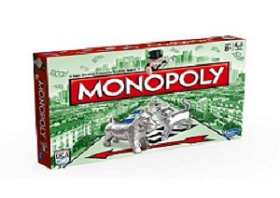
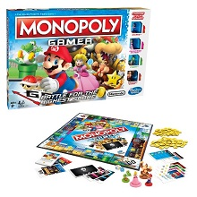

Un juego creado con la función de servir de herramienta para enseñar las teorías acerca de la justicia social y económica extraidos del estudio titulado Progreso y Miseria de Henry George.
Comercializado por vez primera en 1936.
A lo largo de 80 años el juego ha sufrido una notable evolución. Sus múltiples ediciones y sus tantas versiones han dado pie a que se cambiara desde la caja que lo contiene hasta los elementos que lo componen. Logrando así, mantenerse como el favorito a través de las decadas.
Con los años la finalidad del juego cambió para sólo disfrutar un buen rato, negociando propiedades y hasta haciendo uso de medios electrónicos para todas las transacciones que requiere el juego.
